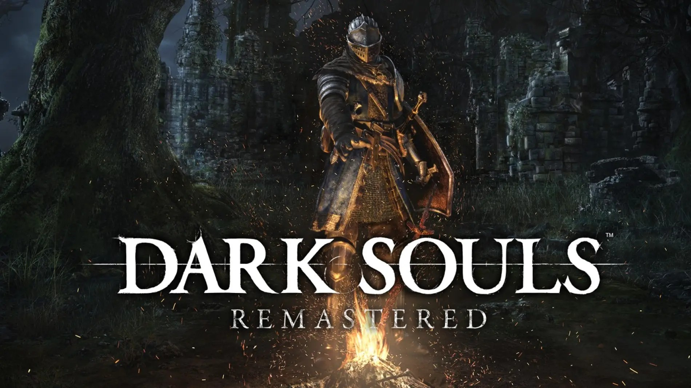

Eric Santos
Edad: 20 años
Cédula: 8-1037-738
Estudiante de Desarrollo de Software. Me interesan los videojuegos, la programación y aprender nuevas herramientas de desarrollo como Git y GitHub.

Dark Souls
Género: Acción / RPG
Año: 2011
Es mi videojuego favorito. Es un RPG de acción conocido por su altísima dificultad, su ambientación oscura y su sistema de combate exigente, donde cada enemigo obliga a aprender patrones y ser paciente. Me gusta porque recompensa la perseverancia y tiene un mundo muy bien conectado para explorar.